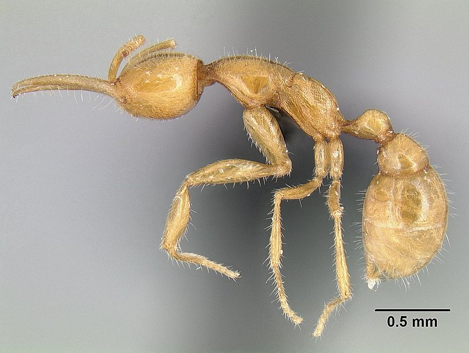

Всё о муравьях
Распространены по всему миру, за исключением Антарктиды и некоторых удалённых островов, образуя 10земной биомассы наземных животных[3]. Общая численность всех муравьев на Земле составляет примерно 20 квадриллионов особей[4]. Успех муравьёв во многих средах обитания обусловлен их социальной организацией и способностью изменять место обитания и использовать разнообразные ресурсы.

Одним из первых исследователей, который в своих научных работах описал общественную жизнь муравьёв, был энтомолог Эрих Васманн, который также является одним из основоположников мирмекологии — науки, изучающей муравьёв. В мире известно более 14 000 современных видов и 345 родов, а также ископаемых 166 родов и более 760 видов муравьёв, распространённых преимущественно в тропиках[5]. В Палеарктике около 1350 видов из 94 родов, в России отмечено более 260 видов из 44 родов[6]